01
Implantes dentários
Para quem perdeu um ou mais dentes e procura uma solução fixa, sem prótese removível.
- Na campanha
- Benefícios exclusivos durante outubro, apresentados na avaliação
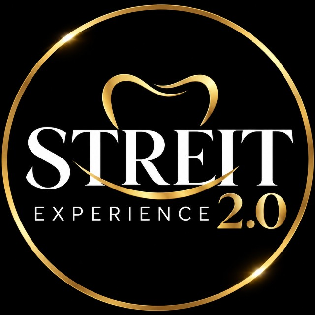
Campanha de outubro · 2ª edição
O mês do seu novo sorriso
Sua vida pode começar a mudar a partir de outubro.
Válida de 1º a 31 de outubro
180 pessoas já deram o primeiro passo
Campanha de outubro · 2ª edição
O mês do seu novo sorriso
Sua vida pode começar a mudar a partir de outubro.
Válida de 1º a 31 de outubro
180
pessoas já deram o primeiro passo nesta edição
Atualizado em
Os 3 tratamentos incluídos na campanha
01
Para quem perdeu um ou mais dentes e procura uma solução fixa, sem prótese removível.
02
Para quem quer mudar cor, forma ou pequenas irregularidades dos dentes da frente, com ensaio do sorriso antes de qualquer desgaste.
03
Um sorriso mais alinhado, com mais conforto e discrição, sem abrir mão da sua rotina.
01
Chame no WhatsAppDiga qual tratamento te interessa e escolha o horário.02
Faça a avaliaçãoExame clínico e os exames de imagem que o seu caso pedir.03
Receba seu plano de tratamentoCom as etapas, os prazos e as condições da campanha por escrito.Seu novo sorriso pode começar agora.
Agendar minha avaliaçãoCondições especiais e benefícios exclusivos durante o mês de outubro. A indicação de cada tratamento depende da avaliação clínica. Responsável técnico: Dr. Rafael Streit — CRO-SC 4730.
Implantodontia · Jaraguá do Sul
Implante planejado em tomografia 3D, instalado com guia cirúrgico e acompanhado até a coroa definitiva. Você sabe cada etapa e cada prazo antes de começar.
Avaliar não obriga a fechar tratamento no mesmo dia
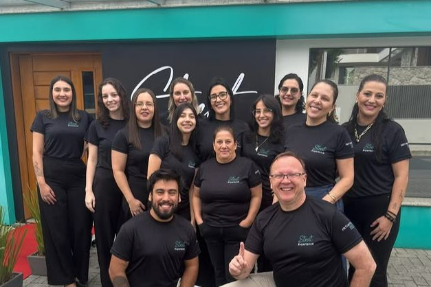
5,0★
nota dos pacientes no Google
359
avaliações publicadas, sem uma abaixo da média
3D
tomografia de feixe cônico na própria clínica
6
especialidades sob o mesmo teto
A clínica
Em atividade desde 2019, a Clínica Streit fica no Centro de Jaraguá do Sul e reúne implantodontia, estética dental, harmonização facial, endodontia e odontologia preventiva sob a mesma equipe. Quem chega com um dente ausente não é encaminhado para três lugares diferentes: o exame, o planejamento, a cirurgia e a coroa acontecem aqui.
Cada procedimento fica com o profissional que tem título na área, e o registro no Conselho Regional de Odontologia de todos eles está publicado nesta página.
Tratamentos
Seis frentes, uma equipe. Você não precisa circular entre consultórios para fechar um tratamento.
Unitário, múltiplo ou protocolo total. Pino de titânio instalado no osso e coroa sobre ele — sem desgastar dentes vizinhos, sem prótese removível.
Tirar dúvida sobre implantes →Laminados cerâmicos e facetas em resina composta, com ensaio do sorriso antes de qualquer desgaste. Clareamento de consultório ou supervisionado em casa.
Pedir avaliação estética →Toxina botulínica, preenchimento e bioestimulador tratados junto com o sorriso — terço inferior do rosto e dentes lidos como um conjunto só.
Falar sobre harmonização →Profilaxia, aplicação de flúor e tratamento de dentina exposta. Sensibilidade ao gelado tem causa — retração gengival, bruxismo, fratura — e cada uma pede conduta diferente.
Agendar uma limpeza →Quando falta osso para receber o implante, reconstruímos a área antes — regeneração óssea guiada ou levantamento de seio maxilar, conforme a tomografia mostrar.
Perguntar se preciso →Endodontia feita com microscópio operatório, que amplia o campo e permite localizar canais que a vista desarmada não alcança — o que decide entre salvar o dente e perdê-lo.
Falar sobre canal →Como funciona
A pergunta que mais chega no nosso direct é "quanto tempo demora". Depende do seu osso — mas o caminho é sempre este, e você recebe o cronograma na primeira consulta.
01
Exame clínico, radiografia panorâmica e tomografia de feixe cônico feita na hora, aqui mesmo. Você sai com diagnóstico e orçamento fechado.
1 consulta · ~60 min
02
A posição de cada implante é definida em software sobre a sua tomografia e vira um guia cirúrgico prototipado, que orienta a broca no dia.
7 a 14 dias
03
Anestesia local, guia posicionado, pino de titânio instalado. Você volta para casa no mesmo dia, com prescrição e retorno em 7 dias para revisão.
40 a 90 min por implante
04
O osso cresce ao redor do titânio e o trava. É a etapa mais longa e a que não se acelera. Em muitos casos você usa um provisório nesse período.
3 a 6 meses
05
Moldagem digital, prova e instalação da coroa em zircônia ou metalocerâmica. Cor escolhida com você, sob luz natural.
2 a 4 semanas
Tecnologia
Na maioria das clínicas, você sai com um pedido de exame, vai a um centro de imagem e volta semanas depois. Aqui a tomografia de feixe cônico é feita na mesma visita — e o resultado aparece na tela ao seu lado.
Isso encurta o diagnóstico e elimina a parte do processo em que a maioria das pessoas desiste.
Equipe
Cada tratamento fica com quem tem título na área. Você sabe o nome do profissional antes de sentar na cadeira.
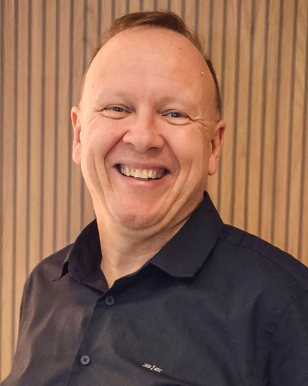
Implantodontia
Responsável pelo planejamento cirúrgico e pela instalação dos implantes, incluindo casos que exigem enxerto ósseo prévio. Graduado pela Univali, com especialização em Prótese Dentária e em Endodontia.
CRO-SC 4730 · responsável técnico
Clínica geral e prevenção
Primeira consulta, diagnóstico, profilaxia e tratamento de sensibilidade. É quem conduz a avaliação inicial e explica o plano.
CRO-SC 22463
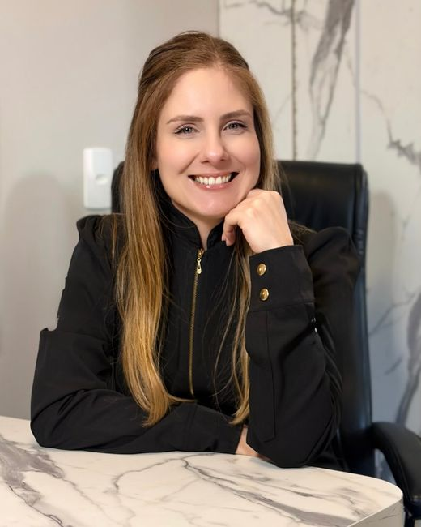
Harmonização facial
Trata o terço inferior do rosto em conjunto com o sorriso — toxina botulínica, preenchimento e bioestimuladores.
CRO-SC 17651
Ambientes
Da fachada que você vai procurar na rua até a cadeira onde o tratamento acontece. As fotos passam sozinhas — ou use as setas.
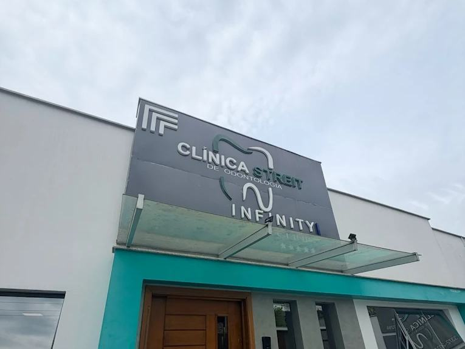
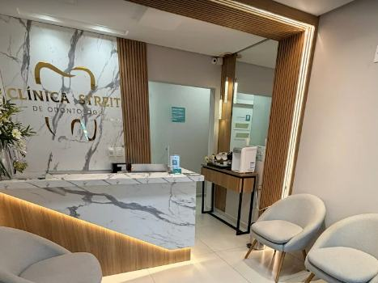
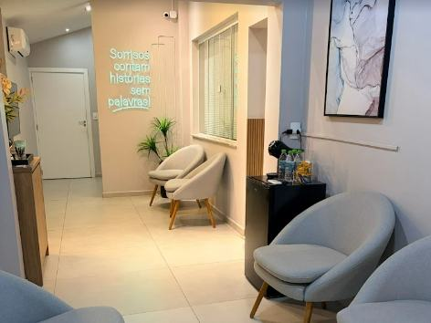
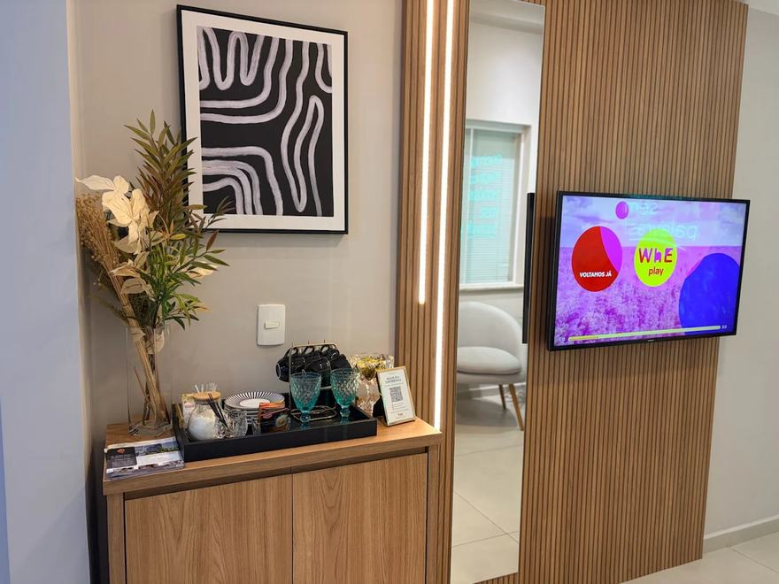
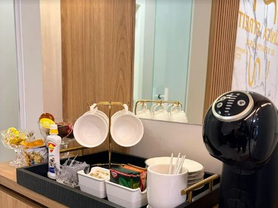
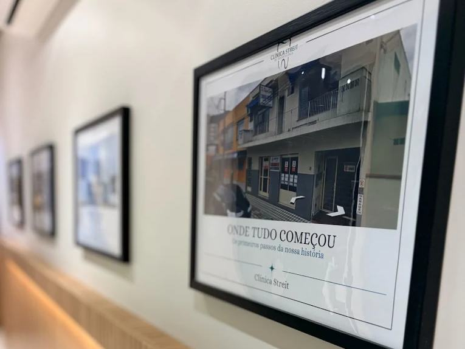
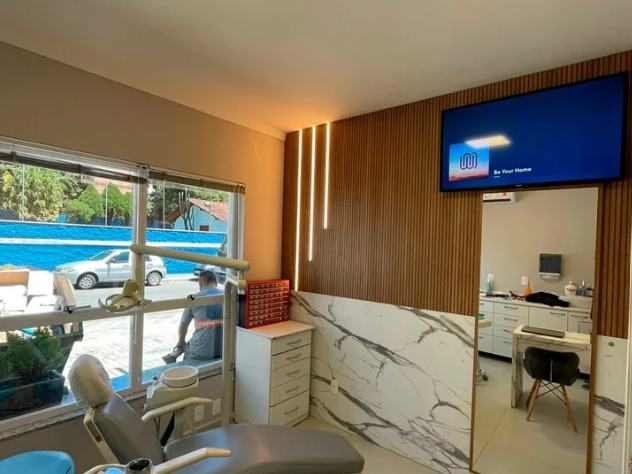
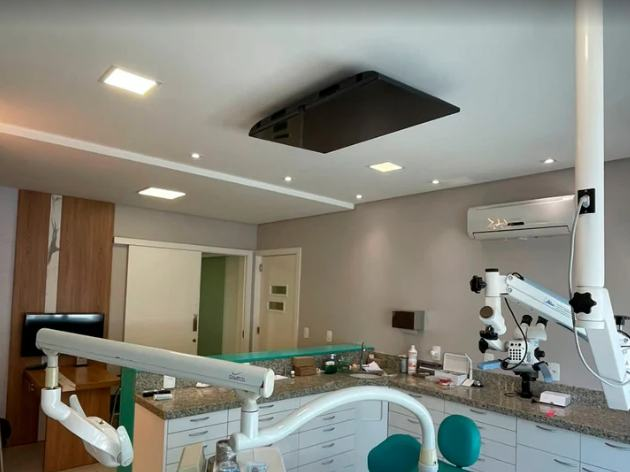
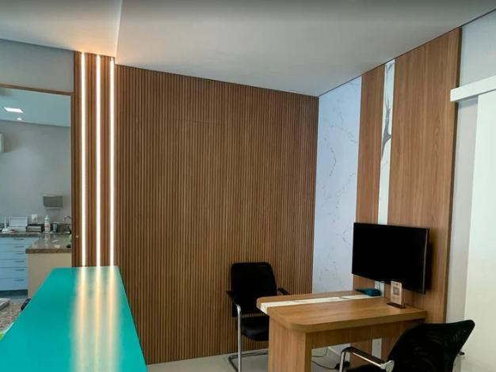
Pacientes
Todas públicas, no perfil da clínica no Google. Dá para ler uma por uma antes de marcar qualquer coisa — inclusive as que não são cinco.
5,0
359 avaliações no Google
★★★★★
Desde o primeiro contato fui muito bem recebido, com uma equipe atenciosa, educada e extremamente profissional.Sidi OrtizGoogle · há 6 meses
★★★★★
Não sou de deixar avaliações, mas esta clínica merece. Pessoas extremamente qualificadas, respeitam o cliente, não estão ali para vender plano.Geisiane RodriguesGoogle · há 2 meses
★★★★★
Nos meus atendimentos foram todos muito objetivos, nada de enrolação. Valores justos, boas condições de pagamento e a qualidade é espetacular.Aurélio MullerGoogle · há 2 meses
★★★★★
O doutor foi muito atencioso e me explicou tudo de uma forma desmistificadora. Me ajudou a perder receios e medos que eu tinha antes de ser atendida.Linda OliveiraGoogle · há 4 meses
★★★★★
Sempre muito bem atendida desde o início da clínica em Jaraguá do Sul, pelo Dr. Rafael e equipe. Recomendo para quem quer um atendimento de qualidade.Vanessa GessnerGoogle · há 6 meses
Dúvidas
São as seis que a recepção responde toda semana. Se a sua não estiver aqui, mande no WhatsApp.
Não existe preço único, e desconfie de quem dá um por telefone. O valor muda conforme a quantidade de implantes, a necessidade de enxerto ósseo e o material da coroa.
Na avaliação você sai com o orçamento fechado, por escrito, depois da tomografia. A consulta não obriga a nada.
Entre 3 e 6 meses na maioria dos casos. A etapa longa é a osseointegração — o osso crescendo ao redor do pino — e ela não se acelera.
Se for preciso enxerto ósseo antes, some de 4 a 6 meses. A tomografia da primeira consulta mostra em qual dos dois cenários você está.
Durante, não — é feita com anestesia local, como uma restauração. O que existe é o pós: inchaço e desconforto nos primeiros 2 a 3 dias, controlados com a medicação prescrita.
A maioria dos pacientes volta à rotina no dia seguinte.
Tem. Prótese removível custa menos e fica pronta mais rápido, mas apoia na gengiva, exige adaptação e não impede a perda de osso no local.
Ponte fixa resolve em semanas, porém desgasta os dois dentes vizinhos, que precisam estar saudáveis.
O implante é o único que substitui a raiz e mantém o osso estimulado. Na avaliação comparamos as três opções para o seu caso.
Dinheiro, PIX, cartão de débito e crédito parcelado. Também trabalhamos com parcelamento direto na clínica para tratamentos mais longos.
Atendemos alguns convênios odontológicos — confirme o seu pelo WhatsApp antes de agendar, porque a lista muda.
Na maior parte dos casos, sim — mas com cuidados extras. Fumo e diabetes descompensada atrasam a cicatrização e aumentam o risco de o implante não integrar.
Diabetes controlada não impede o tratamento. Leve seus exames recentes e a lista de medicamentos na primeira consulta.
Contato
Endereço
R. Eugênio Lessman, 130
Centro · Jaraguá do Sul — SC · 89252-030
Horários
Tomografia, diagnóstico e orçamento fechado em uma visita. Sem compromisso de fechar nada no mesmo dia.
Agendar pelo WhatsApp